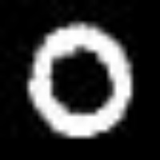
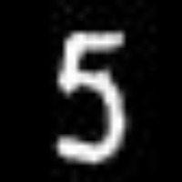
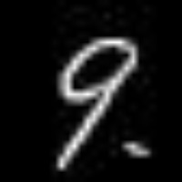

MNIST Example
In this section, we'll use Tensors for a real neural net example – solving the MNIST image classification problem. The idea in this problem is to use a neural net to "read" images of hand-drawn numbers, from 0-9, and correctly identify which number each one is.
You can download the MNIST images in JPG format here. This should give you a folder called archive. Inside archive, there's a folder called trainingSet, and inside that folder there's another folder called trainingSet. If you follow this path and navigate to archive/trainingSet/trainingSet/, there are 10 folders numbered 0-9, each containing a collection of hand-drawn images of numbers corresponding to the folder they're in.
For example, here's the image at archive/trainingSet/trainingSet/0/img_1.jpg:

Here's the image at archive/trainingSet/trainingSet/5/img_119.jpg:

Here's the image at archive/trainingSet/trainingSet/8/img_20.jpg:
We can load this image into Julia with:
using Images
img_path = "archive/trainingSet/trainingSet/8/img_20.jpg"
img = load(img_path)Next, we'll convert the image to a matrix of numbers. Since the images are 28x28 pixels, the matrix representation will be 28x28 numbers, with each corresponding to a pixel.
img_mat = Float64.(img)
println(size(img_mat))
# output: (28,28)But for the neural network we're about to make, we actualy want a flattened 1-dimensional representation of the image, rather than a 2-dimensional matrix. So we'll flatten the image like this, to get a 1-dimensional array of length 28x28=784.
img_flattened = reshape(img_mat, :)
println(size(img_flattened))
# output: (784,)Ok, so that was an example for one image. Now we're going to read in all of the images, flatten them, and store them as rows in a matrix called X. So when we're done, we should have a matrix X with shape (N,784), where N is the number of images we read in. We'll also store the label of each image (what number it is) in an array called y, so that each element of y tells us what number the corresponding row in X is.
# reading in images
base_path = "archive/trainingSet/trainingSet/"
X = [] # image pixel data. end result will be (N,784)
y = [] # digit label. end result will be (N,)
for digit in 0:9
folder_path = joinpath(base_path, string(digit))
for file in readdir(folder_path)
img_path = joinpath(folder_path, file)
img = load(img_path)
img_mat = Float64.(img)
img_flattened = reshape(img_mat, :)
push!(X, img_flattened)
push!(y, digit)
end
end
X = hcat(X...)' # transposing to (N, 784)
println(size(X))
# output: (42000, 784)
println(size(y))
# output: (42000,)So far, so good! Looks like we successfully read in 42,000 images. Now we'll shuffle the image data and labels, but making sure to keep them in the same order as each other, with elements in y still corresponding to rows in X. Here's how we can do that:
using Random
Random.seed!(1234)
# seeding the random number generator for reproducibility
n = size(X,1)
perm = shuffle(1:n)
X = X[perm, :]
y = y[perm]Next we'll split up the data into training and testing sets. We'll use 80% of it for training, and set aside 20% for testing.
train_size = Int(0.8 * size(X,1))
X_train = X[1:train_size, :]
y_train = y[1:train_size]
X_test = X[train_size+1:end, :]
y_test = y[train_size+1:end]
println(size(X_train))
# output: (33600, 784)
println(size(y_train))
# output: (33600,)
println(size(X_test))
# output: (8400, 784)
println(size(y_test))
# output: (8400,)Now it's time to actually start defining our neural network model. We want our model to take in 784 inputs per sample (the size of the flattened 28x28 pixel images). Our inner layer will have 128 neurons, and our final layer will have 10 neurons (corresponding to the 10 possible digits that the image could be). So, we'll need to make sure we shape our Tensors accordingly. Here's the code:
using SimpleGrad
# initializing parameters
# layer 1
weights1 = Tensor(0.01 * rand(784, 128)) # taking in 784 input features, has 128 neurons in the layer
biases1 = Tensor(zeros(128))
# layer 2
weights2 = Tensor(0.01 * rand(128, 10)) # taking 128 inputs (from 128 neurons in the first layer), has 10 neurons in the layer
biases2 = Tensor(zeros(10))Next, some hyperparameters: the batch size, number of classes, number of epochs, and learning rate.
# hyperparameters
batch_size = 100
num_classes = 10
epochs = 3
lr = 0.1Now, we train the model:
global run = 1
for epoch in 1:epochs
for i in 1:batch_size:size(X_train,1)
# size of input matrix = (batch_size, 784)
batch_X = Tensor(X_train[i:i+batch_size-1, :])
batch_y = y_train[i:i+batch_size-1]
## convert batch_y to one-hot
batch_y_one_hot = zeros(batch_size,num_classes)
for batch_ind in 1:batch_size
batch_y_one_hot[batch_ind,Int.(batch_y)[batch_ind]+1] = 1
end
## zero grads
weights1.grad .= 0
weights2.grad .= 0
biases1.grad .= 0
biases2.grad .= 0
# layer 1
layer1_out = relu(batch_X * weights1 + biases1);
# layer 2
layer2_out = layer1_out * weights2 + biases2
loss = softmax_crossentropy(layer2_out,batch_y_one_hot)
backward(loss)
# updating parameter values based on gradient
weights1.data = weights1.data - weights1.grad .* lr
biases1.data = biases1.data - biases1.grad .* lr
weights2.data = weights2.data - weights2.grad .* lr
biases2.data = biases2.data - biases2.grad .* lr;
if run % 10 == 0
println("Epoch: run, loss: $(round(loss.data[1], digits=3))")
end
global run += 1
end
end
# output:
# epoch: 1, run: 50, loss: 2.136
# epoch: 1, run: 100, loss: 1.239
# epoch: 1, run: 150, loss: 0.77
# epoch: 1, run: 200, loss: 0.578
# epoch: 1, run: 250, loss: 0.493
# epoch: 1, run: 300, loss: 0.457
# epoch: 2, run: 50, loss: 0.421
# epoch: 2, run: 100, loss: 0.372
# epoch: 2, run: 150, loss: 0.302
# epoch: 2, run: 200, loss: 0.299
# epoch: 2, run: 250, loss: 0.341
# epoch: 2, run: 300, loss: 0.341Now, let's check out performance on the testing set:
global correct = 0
global total = 0
for i in 1:length(y_test)
X_in = X_test[i:i,:] ## need to keep this (1,784), not (784,)
X_in = Tensor(X_in)
y_true = y_test[i]
layer1_out = relu(X_in * weights1 + biases1)
layer2_out = layer1_out * weights2 + biases2
pred_argmax = argmax(layer2_out.data, dims=2)[1][2]
if pred_argmax-1 == y_true # -1 because digits start at 0
global correct +=1
end
global total += 1
end
println(correct/total)
# output: 0.903690476190476290.36% accuracy on the testing set. Not bad!
Lastly, just for fun, we can put the trained model inside of a user-friendly function, so the user can point the model towards an image file path, and then the function will automatically read in the image, pass it through the model, and generate a guess about what number it is. Here's the function:
# user-friendly function
function guess_digit(img_path::String)
# load image and conver to Tensor
img = load(img_path)
img_mat = Float64.(img)
img_flattened = reshape(img_mat, :)
img_tensor = Tensor(img_flattened)
layer1_out = relu(img_tensor * weights1 + biases1)
layer2_out = layer1_out * weights2 + biases2
pred_argmax = argmax(layer2_out.data, dims=2)[1][2]
prediction = pred_argmax-1 # because digits start at 0
println("Guess: $prediction")
endThen we can try it out with an image from archive/testSet/testSet, which the model hasn't seen yet.
img_path = "archive/testSet/testSet/img_3.jpg"
guess_digit(img_path)
# output: "Guess: 9" The model guesses 9, and if we check that image we can confirm that it is indeed a 9!
